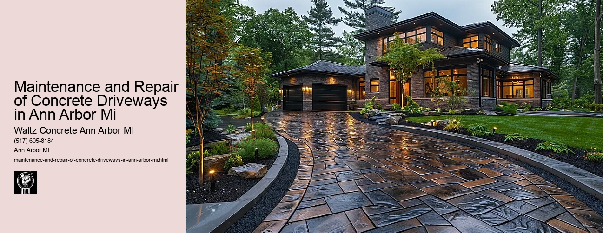

News
Concrete Driveway Installation Ann Arbor Mi
Concrete Driveway Installation Ann Arbor Mi
Choosing the right contractor for installation
Cost of concrete driveway installation in Ann Arbor
Permit requirements for driveway installation in Ann Arbor
The process and timeline of concrete driveway installation
Different types of concrete used in driveways
Maintenance and Repair of Concrete Driveways in Ann Arbor Mi
Maintenance and Repair of Concrete Driveways in Ann Arbor Mi
Preventive maintenance tips for durability
Common causes for concrete driveway damage
Professional companies offering repair services in Ann Arbor
Doityourself versus professional repairs
Costs associated with repairing a concrete driveway
Designs and Styles of Concrete Driveways in Ann Arbor Mi
Designs and Styles of Concrete Driveways in Ann Arbor Mi
Popular design trends for driveways
Considering climate factors when choosing a design or style
Unique customizations available for concrete driveways
Influence of home architecture on driveway design
Stamped stained and decorative options
Environmental Impact of Concrete Driveways in Ann Arbor Mi
Environmental Impact of Concrete Driveways in Ann Arbor Mi
Carbon footprint associated with concrete production
Use of sustainable materials in concrete driveways
Drainage considerations to reduce environmental impact
Local regulations regarding environmentally friendly driveways
Potential use of permeable or porous pavement
Alternatives to Concrete Driveways in Ann Arbor Mi
Alternatives to Concrete Driveways in Ann Arbor Mi
Asphalt driveways and their proscons
Paver stone driveways and their benefitsdrawbacks
Gravel or crushed stone as an alternative option
Comparing costs between different driveway materials
Resinbound surfaces as emerging technology
About Us
Contact Us

Maintenance and Repair of Concrete Driveways in Ann Arbor Mi
Maintenance and Repair of Concrete Driveways in Ann Arbor Mi
Title: The Importance of Maintenance and Repair of Concrete Driveways in Ann Arbor, MI
Concrete driveways are an essential part of many homes and businesses in Ann Arbor, Michigan. They provide a durable surface for vehicles to drive on and can add aesthetic value to properties. However, like any other component of a property, concrete driveways require proper maintenance and repair to ensure they last as long as possible. Let's explore the significance of these services in preserving the integrity and functionality of concrete driveways.
Maintenance is crucial for prolonging the lifespan of concrete driveways. Regularly scheduled maintenance activities include cleaning, sealing, and occasional resurfacing. Cleaning helps remove dirt, stains, and potential contaminants that could damage the driveway's surface over time. A simple power wash can often do the trick; however, for stubborn stains or embedded grime, it may be necessary to employ professional cleaning services.
Sealing provides an additional layer of protection to your driveway from potential damage caused by water penetration or harsh weather conditions prevalent in Ann Arbor. This process involves applying a specialized product designed to fill in pores within the concrete's surface. Over time this sealant wears off due to vehicle traffic or severe weather exposure hence needs re-application every few years.
In some instances where the wear is extensive but not significantly deep enough to warrant complete replacement, resurfacing might be recommended. It involves adding a new layer of concrete mixture on top of the existing one to restore its appearance and functionality without replacing it entirely.
Repair services are just as vital when dealing with damaged driveways. Cracks are common issues with concrete surfaces due largely to temperature fluctuations experienced across different seasons in Ann Arbor. Left unattended these small cracks could expand leading not only unsightly appearance but also safety hazards if they become too large.
Professional contractors offering driveway repair services typically use high-quality materials ensuring longevity while matching existing textures so repaired areas blend seamlessly with original surrounding surfaces.
Apart from cracks, concrete driveways may also experience other forms of damage such as chipping or pitting. Both are usually signs of aging and should be addressed promptly to prevent further deterioration that could necessitate a full replacement.
So why is maintenance and repair of concrete driveways so crucial? Aside from extending the driveway's lifespan, these services help maintain property value. A well-maintained driveway enhances curb appeal which can significantly influence potential buyers' perception of a property.
Moreover, proper maintenance and timely repairs ensure safety by eliminating potential hazards like large cracks or uneven surfaces that could lead to accidents. Lastly, compared to the cost of replacing an entire driveway, regular upkeep is more cost-effective in the long run.
In conclusion, maintenance and repair activities for concrete driveways should not be overlooked by homeowners in Ann Arbor. These services help extend the life of driveways while enhancing aesthetic appeal and maintaining safety standards. Therefore, it is advisable for homeowners to invest in professional maintenance and repair services to keep their concrete driveways in top-notch condition.
Concrete Driveway Installation Ann Arbor Mi
Maintenance and Repair of Concrete Driveways in Ann Arbor Mi
Frequently Asked Questions
Can homeowners perform their own concrete driveway repairs in Ann Arbor?
While minor repairs like filling small cracks can be DIY projects with the right materials from home improvement stores, more complex issues involving the structure of the concrete or large-scale resurfacing jobs should generally be left to professional contractors for safety reasons and best results.
Maintenance and Repair of Concrete Driveways in Ann Arbor Mi